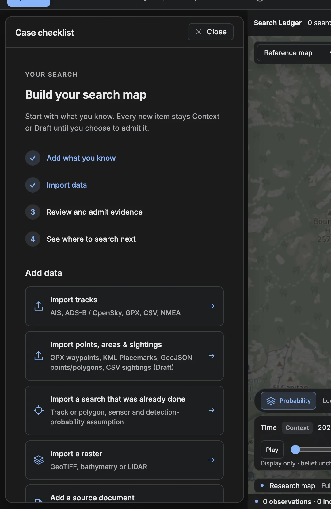

Every map is an argument. A weather map argues about tomorrow; a election map argues about a country; a search map argues about where a person is, and it is an argument with consequences, because people walk, fly and dive where it points. The colours, lines, layers and numbers on that map are the rhetoric. They can be honest rhetoric, or they can quietly overstate what is known.
This part is about the interface: the design decisions that make ABYSSAL's map say exactly what the model believes and no more. Some of them are about mathematics. More of them are about perception, habit and the small ways software lets context masquerade as evidence.
01The firewall between context and evidence
Modern mapping software makes it effortless to pile twenty layers onto a screen: bathymetry, satellite imagery, live ship traffic, weather, historical rumours, automated detections. The danger is not the layers. It is the moment one of them is folded into the probability colours without anyone deciding it should be. At that point the map stops being a record of justified belief and becomes an impressive-looking hallucination.
ABYSSAL draws a hard line. Everything that arrives is context by default: it can be displayed, inspected, measured and annotated, and it moves the belief map by exactly zero. To become evidence, it has to travel a specific path:
A raw source (a PDF, a GPX file, a recording) is stored with a receipt: where it came from, when, its size, its SHA-256 hash and its licence. A claim extracted from it is tied to its provenance root, so copies can be recognised (Part 4). The claim becomes a typed observation with explicit units and stated assumptions, and sits harmlessly as a draft. Only when a named person previews its effect and clicks Include in model does the map change, and that decision is recorded. Live feeds, imagery and detectors can propose drafts. They can never skip the last step.
There is a subtle benefit to this firewall that I did not appreciate until it existed: it makes the interface calmer. Because nothing a person merely looks at can move the map, they can look at everything without fear. Toggle every layer in the Layers panel, run the Ops console's drift tool, scroll thirty days of satellite imagery: the probability colours do not flicker. The map only moves when someone decides it should.
02Colour is a measurement instrument
The single most consequential design choice on a probability map is its colour ramp, and the most common choice, the rainbow, is close to the worst. A rainbow ramp (blue, cyan, green, yellow, red) has two problems. Its perceived lightness rises and then falls, so the eye sees a bright yellow band as a peak even when red is higher, and invents edges where the data are smooth. And it spends its low end on blue and green, the colours of sea and land, so on a marine map the least likely cells are literally the colour of the water behind them.
ABYSSAL's default ramp is Ember: derived from the perceptually uniform inferno map, running from near-black through violet, magenta and orange to pale amber. Its lightness rises strictly from end to end, so brighter always means more probable; it contains no blue and no green, so it never collides with water or vegetation; and opacity also rises with probability, so the lowest cells fade into the basemap instead of painting over it. A unit test enforces both the monotone lightness and the absence of blue and green. The old rainbow is still available as "Classic blue-to-red colours", and viridis as "Colour-blind-safe colours".
The curve under the map is CIE L*, perceived lightness, along each ramp. The rainbow's rises, peaks at yellow and falls: the "ridge" you see around the larger mode is an artefact of the colour map, not of the probability. Switch to the sea-blue interface with the rainbow and watch the low end of the map vanish into the water.
The background matters as much as the ramp. A tool that is mostly about the sea should not wrap a sea-coloured map in a sea-coloured interface: the low end of the probability disappears into the water around it. ABYSSAL's surfaces are neutral graphite, so that sea, land and probability colours carry all of the meaning and the chrome carries none.
03Lines that mean something
Colour shows the shape of belief; it is bad at quantity. So the map also draws credible regions: the solid contour encloses the smallest area holding 50% of the probability, the dashed one 90%. Formally, sort cells by probability density \(p_i/A_i\) and accumulate until the mass reaches \(\alpha\):
The area of the 90% region is the single most useful number on a search map: it is the size of the problem, in square kilometres, at a stated confidence. It sits in the status bar of every case. When the declared outside share is large enough that reaching 90% would need probability that lives outside the map, the 90% area is withheld rather than reported as if the map contained everything.
04Resolution you actually have
A map can be zoomed far beyond the resolution of the model behind it. Pinch into a smooth glowing blob on most tools and it stays smooth, implying a precision the model never had. ABYSSAL's status line says, at every zoom level, how big a model cell is ("Model cells ≈ 97 × 97 m") and when you have passed the point where "only the basemap gains detail".
Two mechanisms make resolution a choice rather than an accident. Fast preview loads a capped 96 × 96 grid first, so a case opens in about a second, and says so; one click on Sharpen map fetches full detail, and panels that report exact numbers (the Evidence Map, Search Information, Where-next) switch to full detail automatically. Viewport detail recomputes just the visible area on a finer 160 × 160 grid when you zoom in, so a coarse ocean-scale model can be inspected at harbour scale without recomputing the ocean.
Edges get the same honesty. Area statements are applied by a cell-centre test, so a polygon edge can be off by up to half a cell, and the documentation says so. "Certain" statements (only here, not here) are clipped on screen so nothing is ever drawn outside them, and the bundled 1:10m coastline gives one-click sea and land statements: a shipwreck is not on land, a hiker is not in the middle of the lake.

05Drawing what a witness saw
People in the field think geometrically: "about ten leagues off Land's End", "a bearing of roughly 045 from the ridge", "she can't be in the lake and must be south of the river". Bayesian search tools tend to make them fill in forms instead. ABYSSAL's Sketch evidence palette lets them draw: a point, a bearing, a range ring, a range and bearing, or a corridor, directly on the map, with live dimensions, snapping and nudging, and a preview of the effect before anything is saved.

The words for trust are deliberate. Asking a volunteer for "reliability 0.6" produces false precision; asking whether a report is doubtful, plausible or trusted produces an honest judgement that the software then maps to a stated number, visible and editable. Each sketch maps onto an existing likelihood (a corridor uses the ellipse likelihood oriented along the route), and editing an included sketch retires the original through a recorded "disable" decision, so history is never rewritten.

06Map first
An early measurement found that the map, the thing the whole product is about, occupied 47% of a 1440 × 900 window; at 1280 × 720 it was 403 pixels tall. Toolbars, panels and summaries had accreted around it. The map-first redesign gave the map the whole window under a 46-pixel header and a 40-pixel toolbar; sources, model and tools became drawers that reserve their own space beside the map rather than covering it; eight view toggles became an icon rail; the legend, time scrubber and model summary moved onto the map itself. With both drawers open, the map still keeps 60% of the width at 1500 pixels.

Smaller decisions add up. A command palette (⌘ K) finds any action by name. Single-key shortcuts open the common tools (K sketch, L layers, W where next, E Evidence Map, ? for the list), and can be switched off. The theme follows the operating system on first load. The smallest text is 10 pixels and every secondary text colour meets WCAG AA contrast in both themes. A new case opens with a short checklist (add what you know, import data, review and admit, see where to search next) rather than an empty map.

07A map that can leave the building
A probability map that lives only on one analyst's laptop cannot be checked by a sceptic, an insurer or a coroner. ABYSSAL exports two kinds of record. The case dossier is a PDF: the map, the admitted evidence, the assumptions, and the hashes that tie them to a specific computation. The offline audit pack is a single self-contained HTML file with a strict content-security policy that blocks all network access (its one script is allowed by hash, not by a blanket exception): an embedded image of the probability grid, a filterable ledger of admitted evidence and search assumptions, and a machine-readable JSON receipt for verification. Both apply the same rules as the screen: protected sites and war graves have exact coordinates withheld by default, and fictional cases are stamped SCENARIO on every page.
Nothing on the screen may claim more than the model: no colour that invents a ridge, no zoom that invents precision, no layer that slips into the belief without a decision, and no number without the assumptions that produced it.
Next, Part 3 derives the mathematics underneath every pixel described here.